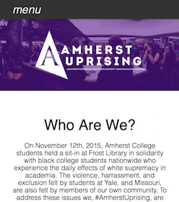

I coded Spontaneity with two others to address the salient problem of loneliness at Amherst College. Event-centered and location-based, this app encourages spontaneous get-togethers. Spontaneity's feed displays all events within 2.5 miles of a user's location. Users can also post their own events. When an event is over, Spontaneity removes it from the list of displayed events.
My Tasks: Geolocation validation (Meteor), form elements (HTML), clearing the feed (JavaScript and Meteor), editing and rebuilding the app post-Hackathon. The code is on this GitHub page.
Amherst Uprising ActivismI coded the Amherst Uprising website with a friend to document and further awareness of this protest. Primary goals of the protest were to draw attention to the racism that exists at Amherst, urge the college to provide better resources for minority students, and encourage faculty and staff to hire more diverse professionals. This website was made using Materialize to be compatible with mobile devices. I coded the website, hooked up the domain to the server, and built in the mobile functionality. |
 |